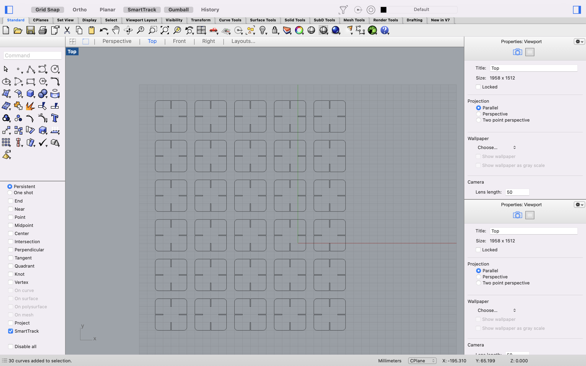
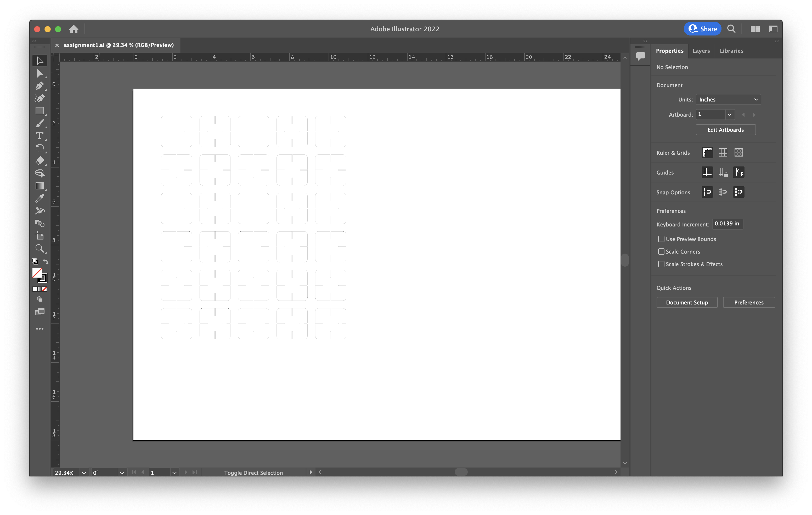
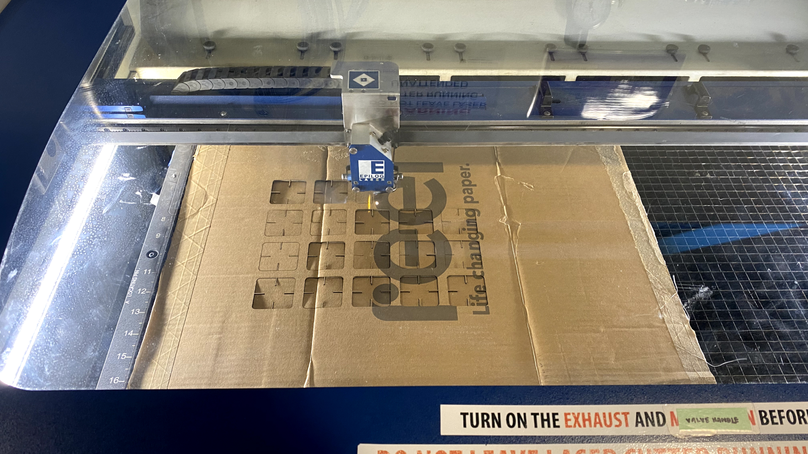
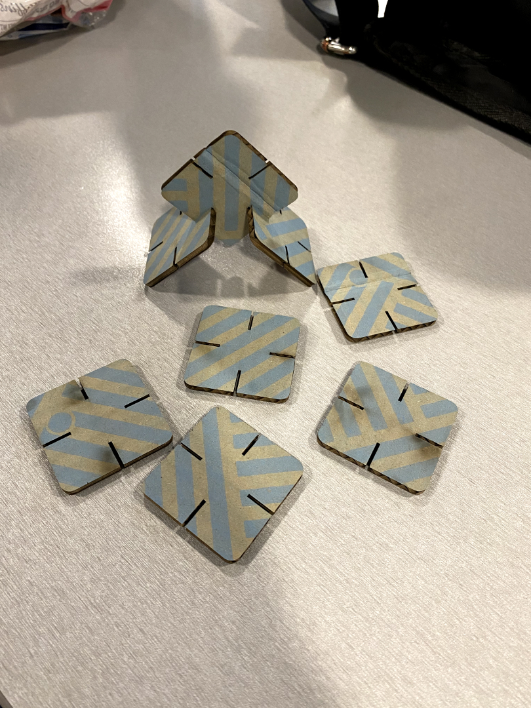
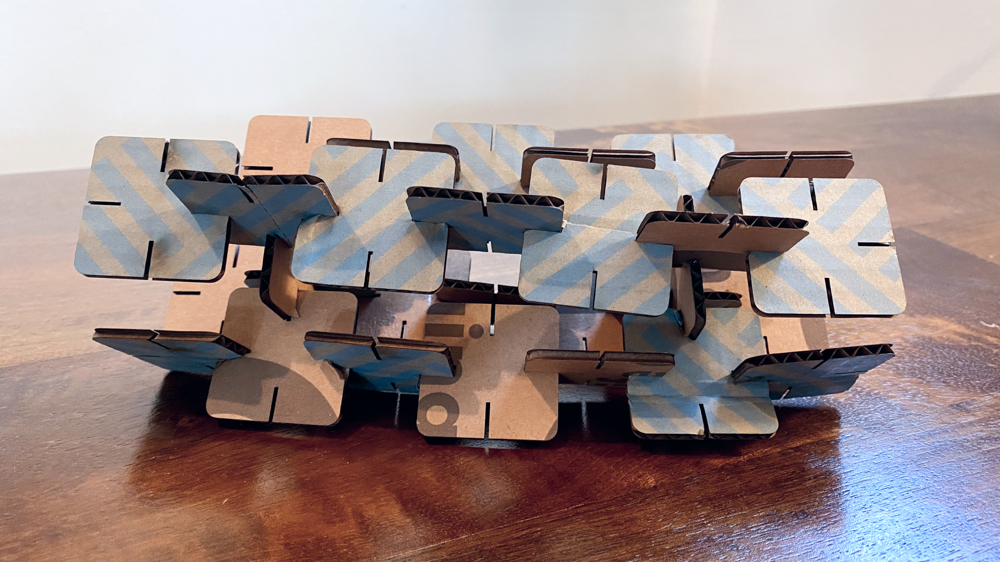

Assignment 1: Modelling & Laser Cutting Documentation

I haphazardly used a pair of scissors to make a quick prototype to gauge the appropriate dimensions for my Rhino profile. I discovered that when the cuts in the shape are the exact same measurement as the depth of the cardboard, the pieces fall apart.

So I decided to make the width of the cuts 1mm, which is 50% of the depth of the cardboard. In Rhino I created a 40mm square.

I used the "FilletCorners" command and gave the square a corner radius of 4.

In order to create the cuts in the shape, I created a 1mm width rectangle, and duplicated it 4 times. Each one was centered 10mm from the edge of each side of the rounded square.

I used the "Trim" command to create the cuts in the shape. Afterward, I used the "Connect" command to join all the points into one unified vector.

Since the assignment called for 30 instances of the part, I used the "Array" command to copy the objects 5 times in the x-direction, and 6 times in the y-direction, and 1 time in the z-direction. The unit cell spacing was set to 50mm to give 10mm spacing in between each created object.

I exported the Rhino file as a ".dxf" and opened it from Adobe Illustrator. I sized the illustrator canvas to match the size of my cardboard, which was 22"x17". I selected all the objects and changed the stroke size to 0.01pt so that the printer would know to cut out the shapes instead of etching. I placed the cardboard into the printer and adjusted the height of the bed to meet the laser.

I saved the ai file to a thumbdrive connected to the Mill's computer and printed my shapes from there, since the laser printer drivers were already installed on that computer. I set the material settings to c-flute cardboard, which was 50 frequency, 20 speed, and 50 power. I pressed print on the computer and pressed go on the laser printer to start the print.

The prints came out great!

Putting the pieces together.
Source file:
Download my Rhino file! Download my AI file!Big thanks to our TA Junchao for doublechecking my work and to the staff at the Mill for helping me get set up with the printer! Also thank you to Sara Cagle for emotional support <3.